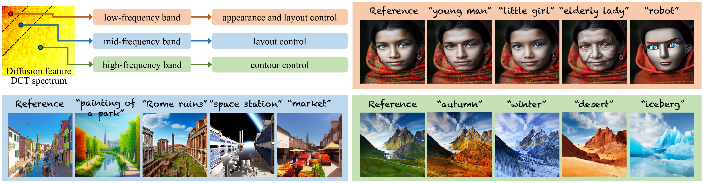
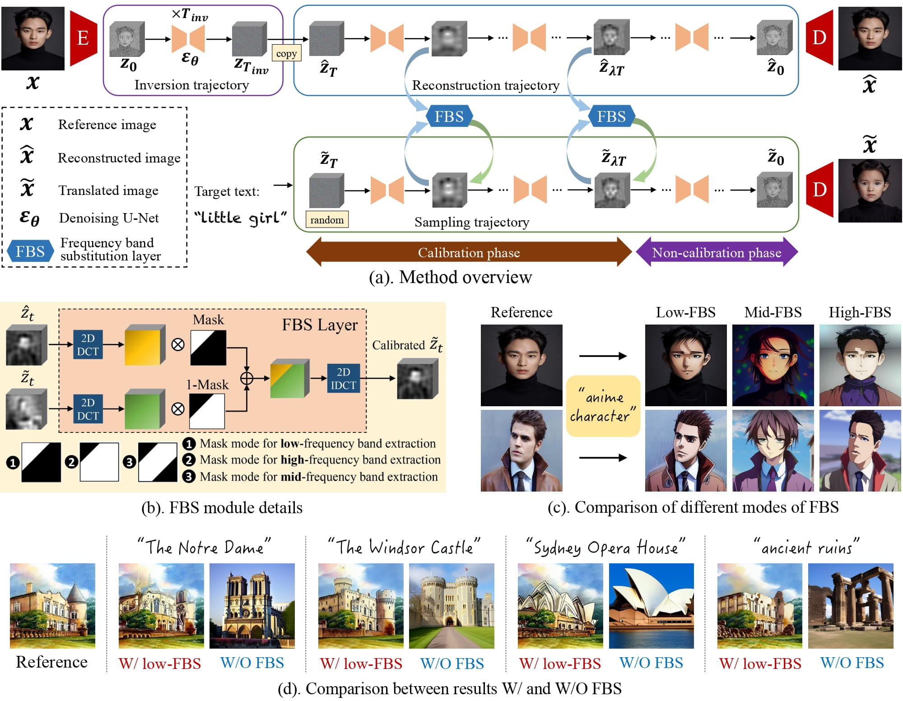
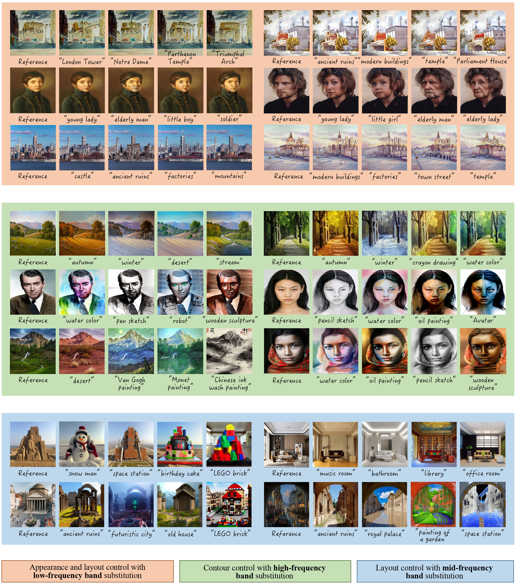

Wangxuan Institute of Computer Technology, Peking University
{gaoxiang1102, liujiaying}@pku.edu.cn

Based on the pre-trained text-to-image diffusion model, It allows flexible control over different guiding factors (e.g., image appearance, image layout, image contours) of the reference image to the T2I generated image, simply by dynamically substituting different types of DCT frequency bands of diffusion features during the reverse sampling process of the diffusion model.
Large-scale text-to-image diffusion models have been a revolutionary milestone in the evolution of generative AI and multimodal technology, allowing wonderful image generation with natural-language text prompt. However, the issue of lacking controllability of such models restricts their practical applicability for real-life content creation. Thus, attention has been focused on leveraging a reference image to control text-to-image synthesis, which is also regarded as manipulating (or editing) a reference image as per a text prompt, namely, text-driven image-to-image translation. This paper contributes a novel, concise, and efficient approach that adapts pre-trained large-scale text-to-image (T2I) diffusion model to the image-to-image (I2I) paradigm in a plugand-play manner, realizing high-quality and versatile text-driven I2I translation without any model training, model fine-tuning, or online optimization process. To guide T2I generation with a reference image, we propose to decompose diverse guiding factors with different frequency bands of diffusion features in the DCT spectral space, and accordingly devise a novel frequency band substitution layer which realizes dynamic control of the reference image to the T2I generation result in a plug-andplay manner. We demonstrate that our method allows flexible control over both guiding factor and guiding intensity of the reference image simply by tuning the type and bandwidth of the substituted frequency band, respectively. Extensive qualitative and quantitative experiments verify superiority of our approach over related methods in I2I translation visual quality, versatility, and controllability. The code is publicly available at: https://github.com/XiangGao1102/FBSDiff.

(1) We provide new insights about controllable diffusion process from a novel frequency-domain perspective.
(2) We propose a novel frequency band substitution technique, realizing plug-and-play text-driven I2I translation without any model training, model fine-tuning, and online optimization process.
(3) We contribute a concise and efficient text-driven I2I framework that is free from source text and cumbersome attention modulations, highly controllable in both guiding factor and guiding intensity of the reference image, and invariant to the architecture of the used diffusion model backbone, all while achieving superior I2I translation performance compared with existing advanced methods.
Below are showcased example I2I translation results of our FBSDiff. Our method enables efficient control over different guiding factors of the reference image to the generated image, including the appearance and layout control with low-FBS, contour control with high-FBS, and layout control with mid-FSB.
